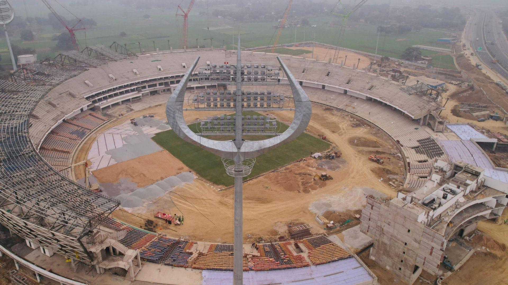
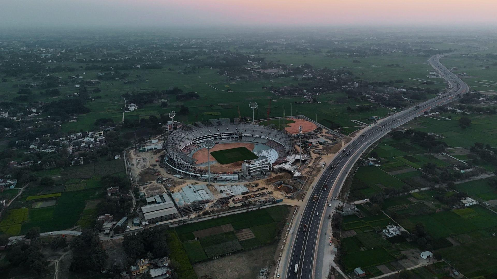
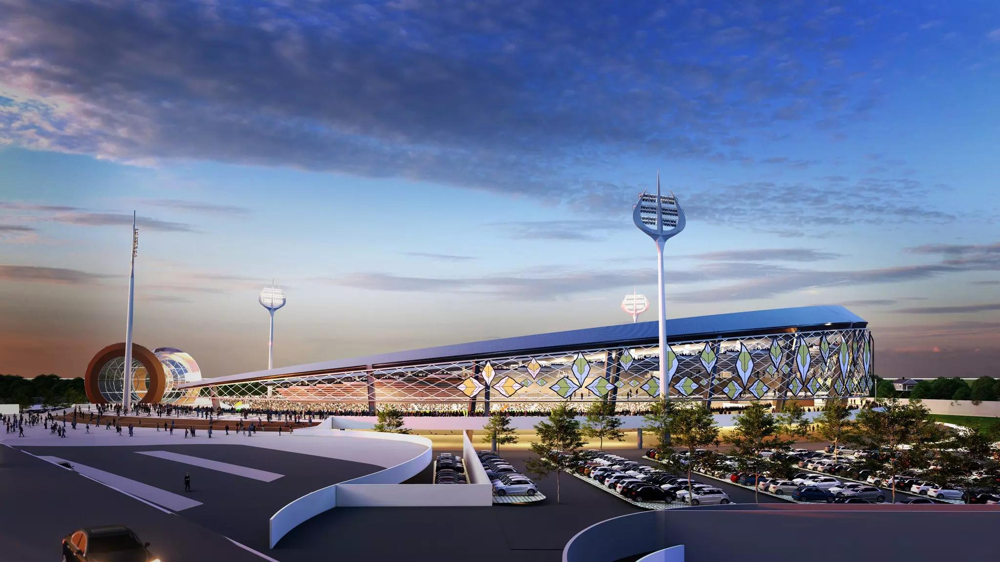

Varanasi International Cricket Stadium
Photo Gallery



About Varanasi International Cricket Stadium
Varanasi International Cricket Stadium is a historic sandstone palace on the banks of the River Ganga, opposite Tulsi Ghat. Constructed in the 18th century by Maharaja Balwant Singh of the Banaras Kingdom, it has served as the royal residence of the Kashi Naresh for centuries. Today it houses the current Maharaja, Anant Narayan Singh, preserving Varanasi’s royal heritage.
Project Timeline
- Project approved by the Uttar Pradesh Government in 2022.
- Foundation stone laid by Prime Minister Narendra Modi on 23 September 2023.
- Construction is in the final stage with completion expected in 2026.
Architecture & Design
- Shiva-inspired architecture with Trishul-shaped floodlights.
- Crescent Moon roof design.
- Damaru-shaped media centre.
- Bilva leaf inspired façade and modern seating bowl.
Project Cost
The total project cost is approximately ₹452 crore, including land acquisition, stadium construction, parking, roads and supporting infrastructure.
Facilities
The stadium will include international-standard pitches, practice nets, dressing rooms, VIP lounges, media centre, LED floodlights, digital scoreboard, food courts and large parking areas.
Expected Completion
- Construction Status: Final Stage
- Expected Completion: 2026
- Capacity: 30,000 (Expandable to 40,000)
- Budget: ₹452 Crore
How to Reach
- Location: Ganjari, Rajatalab, Varanasi
- By Air: Around 30 km from Lal Bahadur Shastri International Airport
- By Train: Around 18 km from Varanasi Junction
- By Road: Easily accessible via Ring Road and Prayagraj Highway.
Nearby Attractions
- Ramnagar Fort
- Banaras Hindu University
- Assi Ghat
- Sarnath
- Kashi Vishwanath Temple
Travel Tips & Fun Facts
- Best time to visit is during cricket season.
- Follow official match schedules before visiting.
- Carry valid tickets for match days.
Disclaimer
The information is for general awareness. Construction progress and event schedules may change. Please verify official updates before visiting.